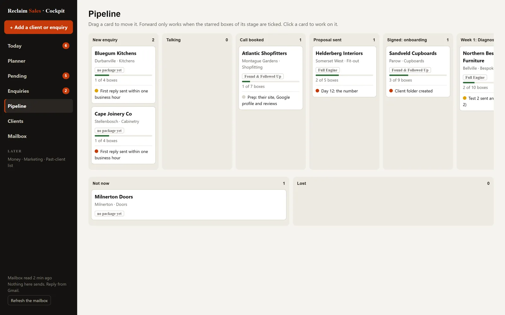
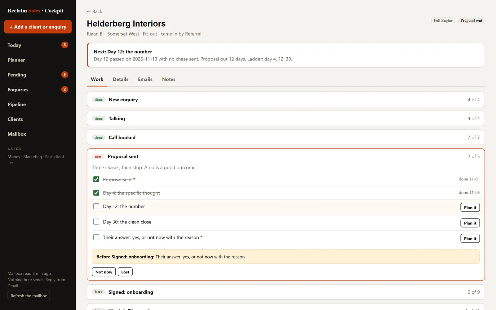

Real system · used to run a business
The Cockpit
The CRM I built for my own sales consultancy and ran it from, September to November 2026. One screen, eight stages, one owner for every fact, and no route in the code that can send an email.
The problem
I ran Reclaim Sales on my own. It fixes how small trade businesses answer and follow up their enquiries. Before that I sold, and finished in the top 20 of 450 buyers nationally, in a high-volume sales environment. So I knew where deals die: the reply that goes out three hours late, the proposal nobody chases on day four, the client handed over before the balance is paid.
A one-person business has all of those leaks and nobody to catch them. Enquiries arrived by email, the website form, Cal.com bookings and WhatsApp. The steps for each package lived in my notes. The money terms lived in my head. I needed one screen that told me the next thing to do for every person, and why.
What I built
A local web app that runs on my own machine and is reached through a Cloudflare tunnel. The work is organised around people moving through stages, not around tools.
- Today. The next box to tick for every person, most urgent first, each with the reason. Red means a time rule has passed, such as an enquiry waiting more than one business hour.
- Enquiries. Everyone not yet signed, and who is waiting on whom, worked out from the mailbox: on us when their mail came last, on them when ours did.
- Pipeline. Eight stages as columns, from New enquiry to Monthly, with Not now and Lost to the side. Drag a card forward and the server checks the gate. If a needed box is open, the card snaps back and names it.
- Clients. Everyone from Signed onwards, with package, monthly fee and progress through setup.
- Mailbox. The business inbox, Inbox and Sent, last 30 days, read-only. Every message is matched to a person. Anyone who wrote and has no record goes to Pending.
Every stage is a checklist: 43 boxes across seven stages, 37 of them needed before a record can move on. The boxes are not typed in the code. They are read from a note in my Obsidian vault, so changing the note changes the work on the next load.


How it joins up
The rule I built it on: one owner per fact. The Cockpit keeps no second copy of anything it does not own. If two places hold the same fact, one of them is wrong.
Obsidian vault
Stage checklists, package steps and prices. Delivery documents per client.
read · two guarded writesGmail
Every message. Who wrote last, so who is waiting.
read-onlyGoogle Calendar
Calls and bookings, including Cal.com.
read-onlyMaster sheet
Researched businesses nobody has contacted. A backup now.
read by the duplicate checkThe Cockpit
One record per person: details, package, stage, every tick with its date, history, opt-out. Planner blocks. An append-only audit log.
Derived, never stored: the next action, who is waiting on whom, who is Pending. Nothing derived can go stale.
Approving is not sending
No route sends email, publishes, spends or contacts anyone. A reply or a setup link is copied out and sent by hand. Ticking “First reply sent” records that I did it.
The gate runs on the server
A record moves forward only when every needed box of its stage is ticked, and of every stage it would jump over. A signed stage needs a package. Monthly also needs “Balance received”: nothing is handed over until the balance clears. The browser only asks. Moving back, or to Not now or Lost, is always allowed and needs a reason, which goes on the record.

When a source fails, it says so
- A checklist note that cannot be read puts a red line on every screen and that stage shows no boxes. No remembered list is used.
- A mailbox that cannot be read is a failure, never an empty inbox. “Waiting on” shows not known, not “on them”.
- A sheet that cannot be read still lets me add a person, checked against the records only, and the confirmation says so.
- Two writes that race are refused by a revision check and retried. A file present but unreadable is a fault, never treated as empty.
What broke, and the fix
The main screen waited on the slowest source
The old overview loaded every source at once and painted when the last one answered. The inbox read alone took 19.9 s cold, so the screen took 22.7 s. First I moved the day's task list to a background build at boot and 05:00, because generating it took about six seconds. Then I gave every slow source a deadline and a cache, and let the page paint from local disk first. Measured on 5 Sep 2026: the overview came back in 0.9 s once the mailbox was cached, and with Gmail made to hang on purpose, Today still answered in 3 to 4 ms. The rebuilt CRM keeps the rule: the main read never waits on Gmail or the calendar. Those load after the page has drawn.
The public address kept going down
Cloudflare showed Error 1033, which means the tunnel has no connection. The script meant to restart it had three faults. It read the tunnel token inside a batch block, where variables expand when the block is parsed, so the tunnel started with an empty token. It checked for a running node.exe, and this machine always has several unrelated ones. Its sleep command fails with no console attached, which is how a background task runs. Its comment said it was a scheduled task. It never was.
I replaced it with a PowerShell keeper that checks the port and a health route every 60 seconds and restarts what is down. A named lock stops two copies running. I tested it by killing the processes and by a real reboot. Its log shows 101 automatic restarts between 3 September and 13 November 2026: 31 tunnel, 70 server.
Every calendar day was one day early
Day keys were built with toISOString().slice(0, 10). South Africa is UTC+2, so local midnight is 22:00 the day before in UTC, and every label slipped back a day. The fix: format dates in the business time zone, and name that zone once in the store so every daily boundary uses it. Ticks, the planner week, the chase ladder, test days and the monthly list all run on Africa/Johannesburg business time.
Expenses read from receipts gave a plausible wrong number
The first scan of billing mail produced totals that looked right and were not. The rules that fixed it:
- A known vendor is not enough. A trial-ending notice quoting a price is not a charge. The mail must also show that money moved.
- Match the vendor by name in the subject, not only the sender, because many receipts come from a payment processor.
- Give each vendor a period: monthly, annual or usage. An annual fee read as monthly is a large error.
- Keep annual fees out of the monthly figure, in their own section.
- Treat domains as annual, and confirm a registration from two mails sent within two days of each other.
- Drop nothing silently. Billing mail with no readable amount is listed for a person to check.
The lesson I kept: when a number comes from parsing someone else's email, it fails as a believable wrong number, not as no data.
What I cut, and why
The first version was a dashboard of business areas: outreach, sales, inbox, marketing, finance, agents. On 20 October 2026 I decided it was organised wrong. The work is people moving through stages. So I rebuilt it in place, with the same server, login and address, and cut hard. The rebuild deleted 21,488 lines from tracked files.
- Instantly and cold outreach. When the business moved to the South African market, the cold-email platform had no use there. I cancelled it, then removed its code, routes, tests and the warmup gate. The opt-out rules survived and moved onto the record. An opt-out is never undone.
- The prospect sheet as a working list. It only ever held cold-email prospects. It is now a backup, read only to catch duplicates when I add someone.
- Six AI drafting agents, paused. They drafted, I approved, nothing sent. They were not drafting well enough to be worth running, so one flag switched them off and every past run was kept. The CRM screens call no model at all, and records are never sent to one.
- Marketing, expenses and AI ops, hidden. Off the menu, code kept, for later. Money, the general to-do list and social media are out of scope until the core works.
The approval queue for the agents has the states draft, reviewed, approved, confirmed sent by a person. There is no executed state on purpose. Anything wired up later has to go behind a person's confirmation, never behind an approval.
Stack
| Part | What |
|---|---|
| Server | Node.js 20, no framework, two dependencies. 63 routes, 18 of them for the CRM. |
| Screens | Plain HTML, CSS and JavaScript. Native HTML5 drag and drop for the pipeline and the weekly planner. Every value escaped before it is drawn. |
| Storage | JSON files with schema stamps, atomic writes and revision checks. An append-only audit log of every tick, move and edit. |
| Gmail and Calendar APIs, read-only, through OAuth on the business's own Workspace. Sheets for the duplicate check. | |
| Access | Bound to 127.0.0.1. A Cloudflare tunnel connects outward; Cloudflare Access is the login. The server checks the Access token itself before any route, and fails closed. |
| Uptime | A PowerShell keeper started at logon, single-instance, with a health check script. |
| Tests | 707 tests on node:test, including one per stage for the next-action rules. A wrapper points them at a temporary data folder, so a test can never touch real records. |
Honest limits
- It was built for one user, me. When this was written it held four real records, all enquiries. No paying client has gone through all eight stages in it yet.
- The screenshots come from its test harness: invented people on
.testaddresses and a faked calendar. The real screens hold real people's details, so I will not show them. - The code stays private for the same reason. I can walk through it on a call.
- The speed figures are single samples on one machine, not a percentile.
- The Facebook and Instagram notification patterns were written from Meta's sender domains and have not been checked against a real message.
What I'd do next
- Switch on WhatsApp. The webhook is built and tested, with signature checks and 30-day deletion; it waits on Meta's business verification.
- Track “waiting on” per conversation, not per person. Two open threads with one client read as one today.
- Move the JSON stores to SQLite once there are more than a few hundred records.
- Run the suite in CI on every change, not just on my machine.
- Rebuild the drafting agents against real replies, with a review score, before turning them back on.